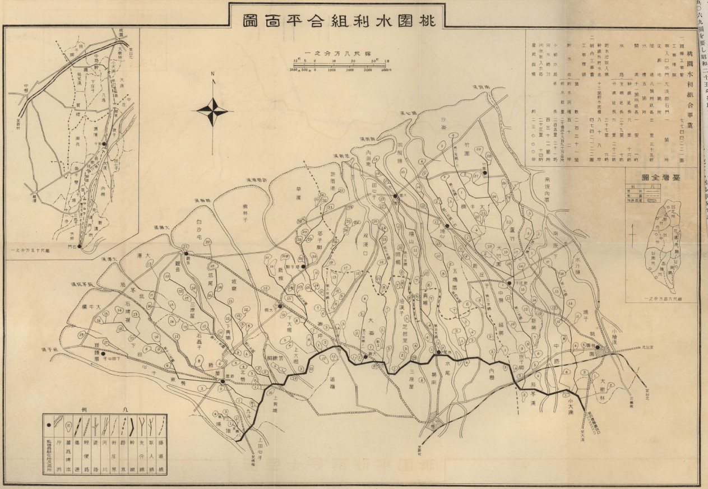
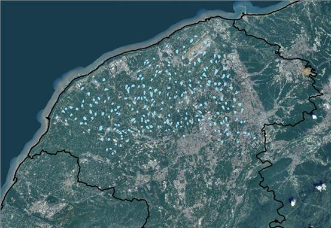
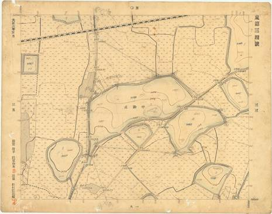
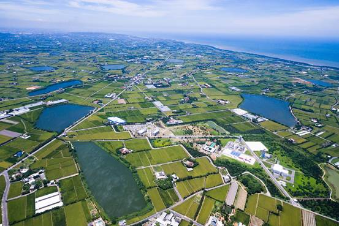

埤塘不只是水池
桃園長期被稱為「千塘之鄉」，原因是台地上曾經有密集的埤塘與圳路。早期農業需要穩定水源，居民便利用地形蓄水，讓埤塘成為灌溉、生活與地方記憶的一部分。
華興池也是這個脈絡中的一座埤塘。它現在看起來像公園，但背後仍然保留水利、土地利用與社區生活的痕跡。
從桃園埤塘文化看華興池的起源與生活連結

桃園長期被稱為「千塘之鄉」，原因是台地上曾經有密集的埤塘與圳路。早期農業需要穩定水源，居民便利用地形蓄水，讓埤塘成為灌溉、生活與地方記憶的一部分。
華興池也是這個脈絡中的一座埤塘。它現在看起來像公園，但背後仍然保留水利、土地利用與社區生活的痕跡。
桃園台地早期水源不穩，農田仰賴雨水與蓄水設施。埤塘的功能就是在有水時儲存，缺水時供應灌溉，讓農作比較不容易受到旱季影響。
桃園大圳興建後，灌溉方式逐漸改變。許多埤塘不再只靠雨水，也和圳路系統連在一起，形成更完整的農業用水網絡。
華興池資料中被整理為桃園大圳第 6 支渠 12 號池。這代表它並不是單純景觀池，而是曾經屬於農田水利系統的一部分。



過去埤塘常因灌溉與安全需求而較難親近，華興池也曾有較高、較硬的池岸邊界。後來改造時降低視覺阻隔，讓居民能沿著步道靠近水岸。
現在的華興池加入遊戲場、休憩平台、環池步道與濱水空間。居民可以散步、看風景、觀察動植物，也可以把這裡當成認識地方水文化的戶外教室。